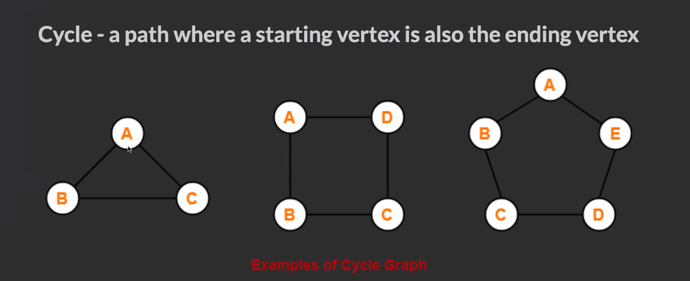
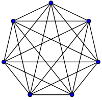
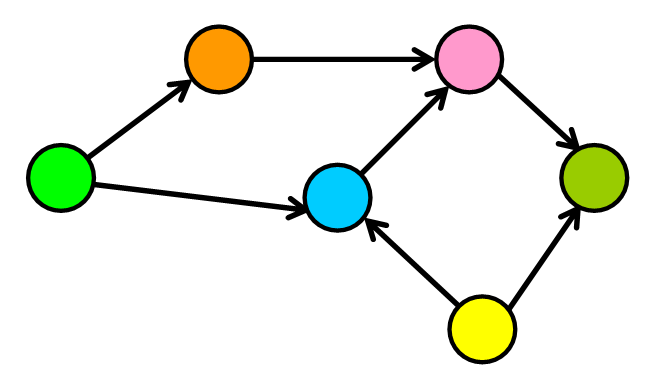
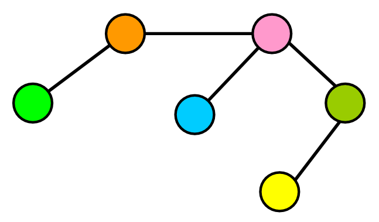
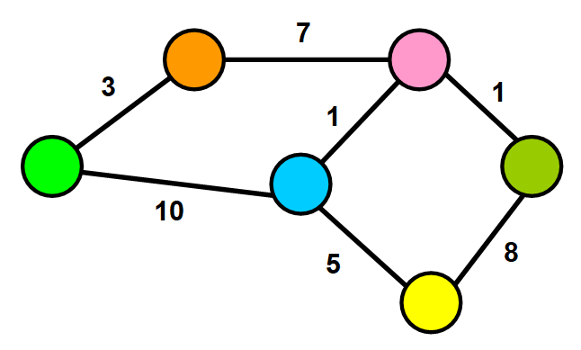
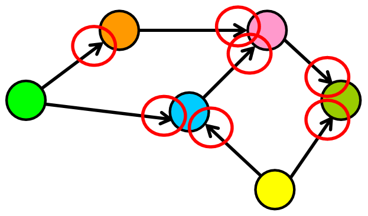
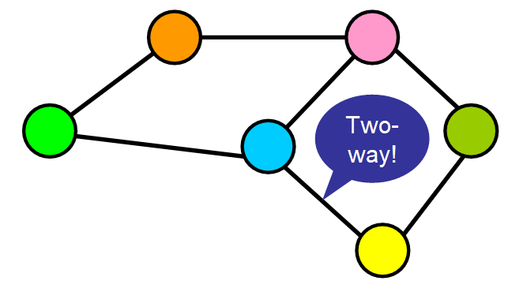
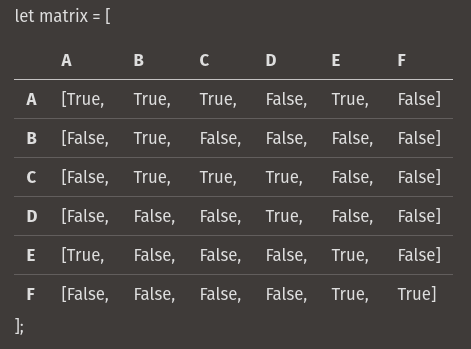

Concepts Overview
Types of Graphs
Ways to Reference Graph Nodes
Code Examples
Basic Graph Class
Node Class Example
Traversal Examples


“Dense graphs have many edges. But, wait! ⚠️ I know what you must be thinking, how can you determine what qualifies as “many edges”? This is a little bit too subjective, right? ? I agree with you, so let’s quantify it a little bit: Let’s find the maximum number of edges in a directed graph. If there are |V| nodes in a directed graph (in the example below, six nodes), that means that each node can have up to |v| connections (in the example below, six connections). Why? Because each node could potentially connect with all other nodes and with itself (see “loop” below). Therefore, the maximum number of edges that the graph can have is |V|\*|V| , which is the total number of nodes multiplied by the maximum number of connections that each node can have."





Uses a class to construct a node and define the neighbors as properties of each node.
class GraphNode {
constructor(val) {
this.val = val;
this.neighbors = [];
}
}
let a = new GraphNode("a");
let b = new GraphNode("b");
let c = new GraphNode("c");
let d = new GraphNode("d");
let e = new GraphNode("e");
let f = new GraphNode("f");
a.neighbors = [e, c, b];
c.neighbors = [b, d];
e.neighbors = [a];
f.neighbors = [e];
Seeks to solve the shortcomings of the matrix implementation. It uses an object where keys represent node labels and values associated with that key are the adjacent node keys held in an array.
let graph = {
a: ["b", "c", "e"],
b: [],
c: ["b", "d"],
d: [],
e: ["a"],
f: ["e"],
}; class Graph {
constructor() {
this.adjList = {};
}
addVertex(vertex) {
if (!this.adjList[vertex]) this.adjList[vertex] = [];
}
addEdges(srcValue, destValue) {
this.addVertex(srcValue);
this.addVertex(destValue);
this.adjList[srcValue].push(destValue);
this.adjList[destValue].push(srcValue);
}
buildGraph(edges) {
edges.forEach((ele) => {
this.addEdges(ele[0], ele[1]);
});
return this.adjList;
}
breadthFirstTraversal(startingVertex) {
const queue = [startingVertex];
const visited = new Set();
const result = new Array();
while (queue.length) {
const value = queue.shift();
if (visited.has(value)) continue;
result.push(value);
visited.add(value);
queue.push(...this.adjList[value]);
}
return result;
}
depthFirstTraversalIterative(startingVertex) {
const stack = [startingVertex];
const visited = new Set();
const result = new Array();
while (stack.length) {
const value = stack.pop();
if (visited.has(value)) continue;
result.push(value);
visited.add(value);
stack.push(...this.adjList[value]);
}
return result;
}
depthFirstTraversalRecursive(
startingVertex,
visited = new Set(),
vertices = []
) {
if (visited.has(startingVertex)) return [];
vertices.push(startingVertex);
visited.add(startingVertex);
this.adjList[startingVertex].forEach((vertex) => {
this.depthFirstTraversalRecursive(vertex, visited, vertices);
});
return [...vertices];
} class GraphNode {
constructor(val) {
this.val = val;
this.neighbors = [];
}
}
function breadthFirstSearch(startingNode, targetVal) {
const queue = [startingNode];
const visited = new Set();
while (queue.length) {
const node = queue.shift();
if (visited.has(node.val)) continue;
visited.add(node.val);
if (node.val === targetVal) return node;
node.neighbors.forEach((ele) => queue.push(ele));
}
return null;
}
function numRegions(graph) {
let maxLength = 0;
for (node in graph) {
if (graph[node].length > maxLength) maxLength = graph[node].length;
}
if (maxLength === 0) {
return (length = Object.keys(graph).length);
} else {
return maxLength;
}
}
function maxValue(node, visited = new Set()) {
let queue = [node];
let maxValue = 0;
while (queue.length) {
let currentNode = queue.shift();
if (visited.has(currentNode.val)) continue;
visited.add(currentNode.val);
if (currentNode.val > maxValue) maxValue = currentNode.val;
currentNode.neighbors.forEach((ele) => queue.push(ele));
}
return maxValue;
}With a Graph Node Class
function depthFirstRecur(node, visited = new Set()) {
if (visited.has(node.val)) return;
console.log(node.val);
visited.add(node.val);
node.neighbors.forEach((neighbor) => {
depthFirstRecur(neighbor, visited);
});
}
function depthFirstIter(node) {
let visited = new Set();
let stack = [node];
while (stack.length) {
let node = stack.pop();
if (visited.has(node.val)) continue;
console.log(node.val);
visited.add(node.val);
stack.push(...node.neighbors);
}
}
With an Adjacency List
function depthFirst(graph) {
let visited = new Set();
for (let node in graph) {
_depthFirstRecur(node, graph, visited);
}
}
function _depthFirstRecur(node, graph, visited) {
if (visited.has(node)) return;
console.log(node);
visited.add(node);
graph[node].forEach((neighbor) => {
_depthFirstRecur(neighbor, graph, visited);
});
}